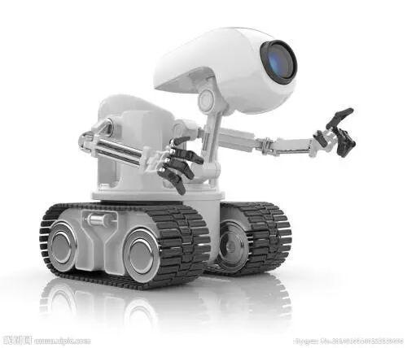
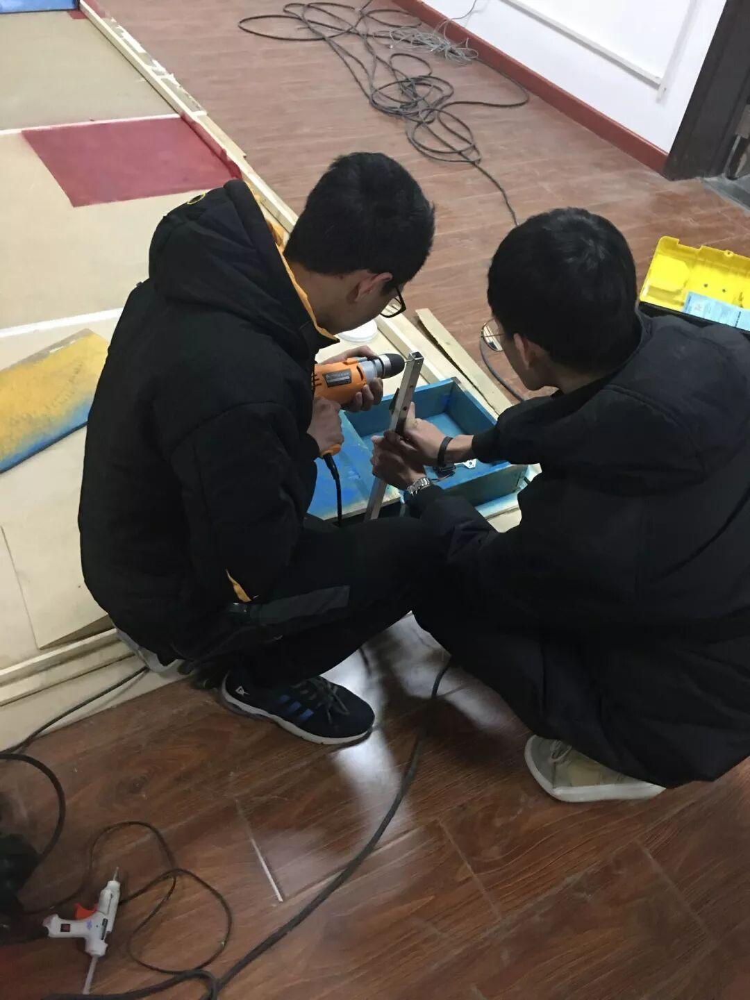
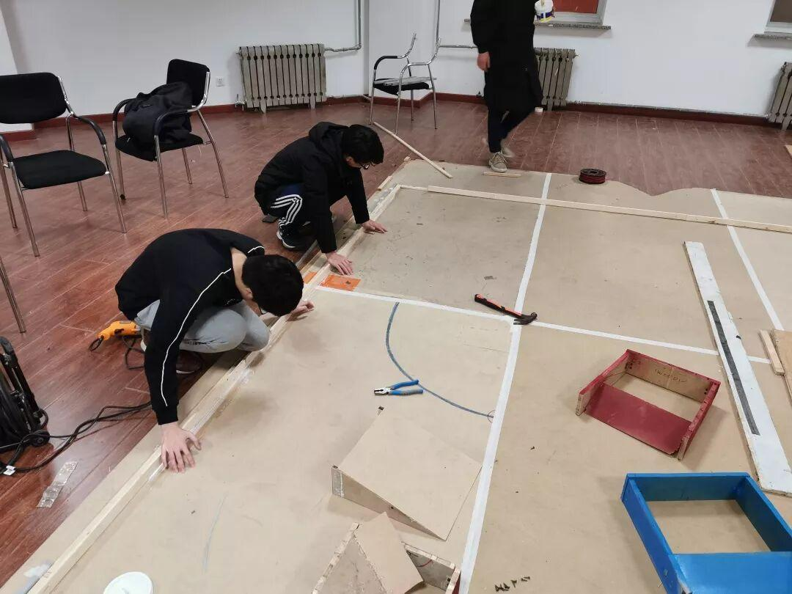
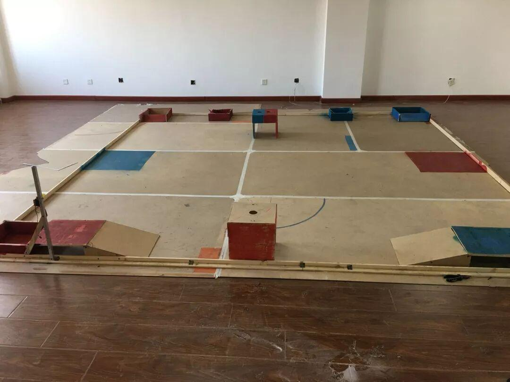

“理工杯”大战，一触即发

期待已久的理工杯比赛终于要来了，不用猜都知道大家一定好奇比赛的场地情况，大赛之际，小编为大家带来了最新的比赛场地信息。
学长们为了场地的搭建可是费了九牛二虎之力，小编去拍制作场地照片时，能感受一股强烈的紧张感。


场地完成中...
看似慌得一批，实则稳如泰山。学长就是学长，怎会不按时完工？要速度更要质量。奉上比赛场地照片。

精致而优雅

经过了漫长的准备过程，各路英雄豪杰，终于要到了大展身手的日子，“理工杯”大战注定会很“血腥”“残酷”，大家要坚持住，人争一口气，佛受一炷香。
准备理工杯，熬夜那都是家常便饭，空余时间更是不存在，头发什么的根本无所谓。
例如小编室友的小队，都是小白，但是经过一点点的研究，最终用了5个舵机造出了类似“挖掘机”的机器人。我是真的佩服！
编筐编篓，全在收口。明天就是理工杯比赛了，大家更要好好检查自己的机器人，再了解一遍比赛规则，确保万无一失。放手一搏，不留遗憾，对得起自己付出的汗水就好，用东北话说，就是干就完了！
编辑：刘兆唯